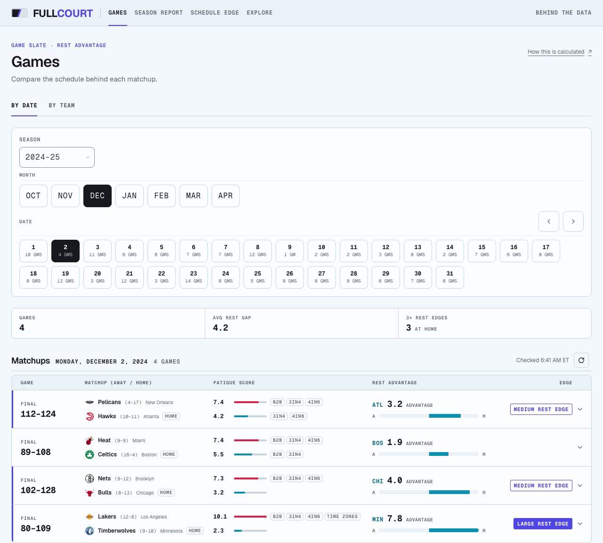
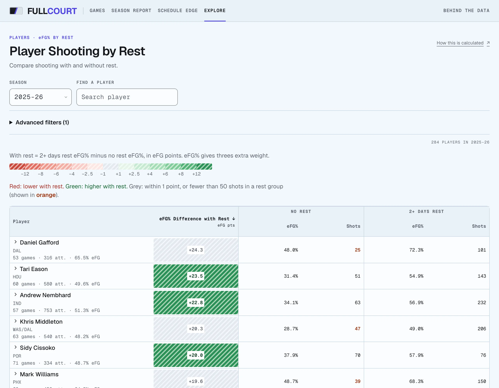

웹 · 데이터 · 개인 프로젝트 · 2026.03–2026.11운영 중
FullCourt
NBA 경기 사이의 휴식과 이동을 계산하고, 휴식 조건에 따른 승률을 홈팀 승률과 함께 비교할 수 있게 만들었습니다. 휴식 격차와 시대별 결과도 나누어 볼 수 있습니다.
- TypeScript
- Next.js
- PostgreSQL
- Drizzle ORM
- Python · scikit-learn
- 783건1차 출처로 보완한 연장전 기록
- 346건NBA 박스스코어로 추가 수정한 연장전 기록
- 51,695저장된 경기예정 일정 포함
저장된 경기가 맞는지 어떻게 확인했나?
전체 기간을 점검해 빠진 연장전 기록 783건을 1차 출처로 채웠습니다. 이어서 아직 확인되지 않은 5,815경기를 NBA 박스스코어와 대조해 346건을 더 고친 뒤 지표를 다시 계산했습니다.


핵심
- 경기 갱신은 트랜잭션과 행 잠금으로 처리
- 빠진 연장전 기록 783건을 1차 출처로 보완
- 잠금 순서를 경기 ID로 고정해 교착 상태 방지
- CI에서 실제 PostgreSQL로 트랜잭션 테스트
동작 흐름
- 일정 수집
예약 실행이 매일 경기 일정과 결과를 받아 옵니다. 실행 요청은 비밀 토큰을 시간 차이가 드러나지 않는 방식으로 비교해 확인합니다.
- 휴식 · 이동 계산
경기 일정에서 팀별 휴식일과 도시 간 이동 거리를 계산하고, 팀 일정과 경기 상세를 연결합니다.
- 저장
경기 한 건을 갱신할 때 READ COMMITTED 트랜잭션에서 그 행을 잠급니다. 여러 행을 잠글 때는 경기 ID 순서로 잠가 교착 상태가 생기지 않게 했습니다.
- 화면
지난 시즌 응답은 CDN에 한 시간, 시즌 중 응답은 60초 동안 보관합니다. 요청 값은 Zod 스키마로 검사하고 틀리면 400을 돌려줍니다.
휴식 지표는 과거 경기의 경향이며, 휴식이 승패의 원인이라는 뜻은 아닙니다.